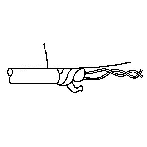
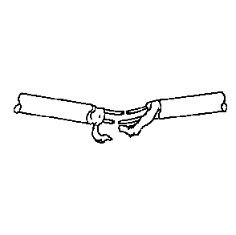
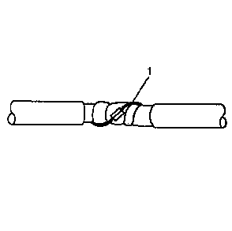
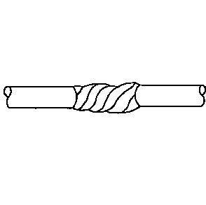

连接绞合线或屏蔽电缆
绞合线/屏蔽电缆用于防止导线受电气噪声的影响。这种结构的双芯电缆用于收音机和Delco-Bose®扬声器/放大器装置之间，以及其它需要传送低电平的灵敏信号的应用场合。按照以下说明修理绞合线/屏蔽电缆。

1.
剥除外层护套 (1)。小心操作，避免割伤聚酯薄膜胶带屏蔽线。
2.
松开胶带。切勿拆下胶带。因为在做好接头后，还要用这块胶带来重新包扎绞接线芯。

3.
准备接头。解开线芯并按照
线间修理
的说明进行操作。建议将接头错开 65 毫米（2.5 英寸）。

注意:
包扎聚酯薄膜胶带时使铝面朝内。从而确保与屏蔽线电气接触良好。
4.
重新装配电缆。
•
用聚酯薄膜胶带重新包缠线芯。如果聚酯薄膜胶带损坏，使用3M产品AL-36FR以更换损坏的胶带。
•
小心操作，避免将屏蔽线缠在胶带 (1) 中。
•
按照铜芯导线的连接说明连接屏蔽线。
•
将屏蔽线缠绕在线芯上，并用绝缘胶带包裹好，以代替外绝缘层。

5.
用胶带包扎整个电缆。包扎胶带时，采用缠绕方式。